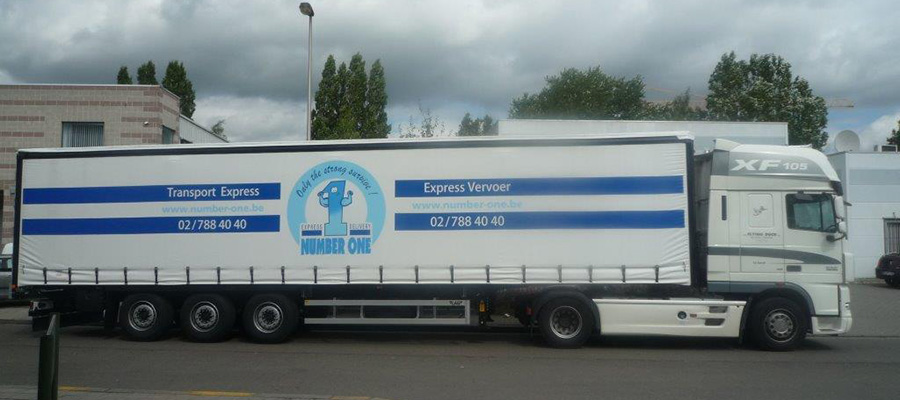
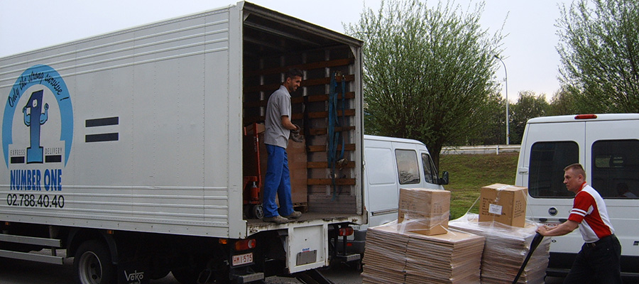
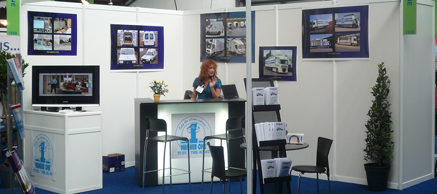

Solutions de transport dédié et express, fiables et efficaces pour tous vos besoins logistiques.
Des solutions adaptées à chaque besoin de transport, de l'enveloppe au semi-remorque.
Solutions de transport national et international adaptées à vos besoins. Plis, palettes ou colis volumineux retirés et livrés dans la foulée.
National & InternationalLe meilleur rapport qualité/prix pour vos envois professionnels. Réduction de 40 % sur le tarif express pour les envois avec délais flexibles.
-40% • J+1Un chauffeur professionnel à votre service, à l'heure ou à la journée. Contactez-nous dès maintenant pour une offre personnalisée.
Flexible • ProfessionnelDepuis plus de 20 ans, Number One est spécialiste du transport express en Belgique et en Europe.
De 1 gramme à 30 tonnes, nous prenons en charge tous vos envois, du courrier à la marchandise volumineuse. Notre flotte complète — de la simple voiture au semi-remorque — et notre équipe de 70 professionnels sont à votre service pour chaque envoi.
Nous répondons aux demandes de clients issus des secteurs les plus variés : artisans, PME, multinationales et bien plus encore.
Enlèvement et livraison dans la foulée pour vos urgences.
Police CMR, suivi administratif, équipe stable depuis plus de 20 ans.
Belgique et tous les pays européens. Même service, même qualité.
De la voiture au semi-remorque, le véhicule adapté à votre besoin.
Notre équipe est disponible du lundi au vendredi de 7h à 20h.
Notre spécialisation depuis plus de 25 ans. Notre équipe expérimentée de près de 70 personnes (avec très peu de rotation depuis toutes ces années, gage de professionnalisme) est à votre disposition pour vous apporter LA Solution dont vous avez besoin.
Nous nous chargeons de vos envois express vers/depuis la Belgique et tous les pays européens. Grâce à notre large choix de véhicules, qui va de la simple voiture à la semi-remorque, nous mettons à votre disposition le véhicule parfaitement adapté à vos besoins. Plis, palettes ou colis volumineux : nous assurons une prise en charge et une livraison rapides. Nos chauffeurs-livreurs, tout comme nos dispatcheurs et l'ensemble de notre équipe, sont à votre écoute et prêts à vous assister, y compris pour la manutention.
Idéale pour les petits déplacements et livraisons rapides en milieu urbain.
Parfaite pour les petits transports et livraisons quotidiennes.
Idéale pour vos déménagements et livraisons du quotidien.
Volume optimal pour transport plus important, en toute sécurité.
6 palettes euro. Pour vos envois mi-charge régionaux et nationaux.
14 palettes euro. Idéal pour les chargements importants nationaux.
18 palettes, version légère. Pour les chargements complets nationaux.
18 palettes, version lourde. Pour les marchandises denses et lourdes.
Camion bâché pour marchandises sensibles aux intempéries.
Pour vos plus gros volumes. Jusqu'à 24 tonnes et 33 palettes.
Transport réfrigéré pour vos denrées fraîches. Contrôle température.
Transport frigorifique pour produits surgelés. Chaîne du froid garantie.
Cette formule vous permet de bénéficier, sous certaines conditions, d'une réduction attractive de 40% sur le tarif express ! Nous proposons ce service complémentaire à notre clientèle fidèle pour les envois dont les délais de livraison sont plus flexibles. Soyez amplement rassurée : les coûts de vos transports sont allégés mais la qualité de notre service reste inchangée.
| Zone | Tarif Économique |
|---|---|
| Bruxelles (19 communes) | 6,00 € |
| Banlieue | 7,00 € |
| Brabant (2 provinces) | 11,00 € |
| Belgique (7 provinces) | 13,75 € |
| Province du Luxembourg | 22,00 € |
| Étranger | Sur demande |
| Envoi | Express | Économique | Économie |
|---|---|---|---|
| 2 pal / 600 kg → Liège | 155,40 € | 93,24 € | -62,16 € |
| 8 pal / 2T → Ostende | 237,36 € | 142,42 € | -94,94 € |
| 6 pal / 1T → Arlon | 379,04 € | 227,42 € | -151,62 € |
| 10 pal / 4,5T → Anvers | 108,56 € | 65,14 € | -43,42 € |
Bénéficiez, à tout moment, d'un véritable professionnel du transport à votre service ! Que ce soit à l'heure ou pour la journée entière, un chauffeur flexible, prêt à s'adapter à vos besoins, est mis à votre disposition. La solution idéale en cas de surcharge de travail, de défaillance de votre flotte ou si vous souhaitez éviter de gérer du personnel. Le véhicule, en cas de panne ou d'accident, est bien sûr automatiquement remplacé sans démarche particulière. Ce service est disponible au départ et retour de Bruxelles et vous ne payez le chauffeur que pour les heures réellement prestées.
Ce supplément est d'application pour tous les services de Number One. La surcharge carburant est majorée de 0,5% en 0,5%, sur base des données publiées chaque semaine par la Commission européenne (DG Energie et Transports – Bulletin Pétrolier).
L'index de la dernière semaine du mois est utilisé pour établir la majoration portant sur les envois du mois suivant. Number One dépend des sources internationales et officielles et ne base pas la majoration sur les variations quotidiennes des prix en station-service.
| Période | Surcharge (%) | Base de calcul |
|---|---|---|
| Mois en cours | Contactez-nous pour le taux actuel : +32 2 427 60 04 | |
Nous nous occupons de vos envois les plus urgents vers/depuis la Belgique ou tous les pays européens !
Entreprise familiale belge spécialisée dans le transport express national et international.
Nous sommes une entreprise familiale, active dans le secteur du transport depuis plus de 25 ans. Le sérieux, la rigueur, la rapidité et le suivi administratif sont synonymes, pour notre société, de gage de confiance.
Notre charroi de +/- 30 camions et camionnettes nous permet d'assurer les transports de plus de 400 clients fidèles, depuis l'artisan jusqu'à la multinationale en passant bien sûr par la PME.
Nous nous occupons de vos envois les plus urgents vers/depuis la Belgique ou tous les pays européens. Vos plis et enveloppes, palettes ou autres colis sont retirés et livrés immédiatement et dans la foulée.
Quelle que soit votre demande, nous avons Votre Solution.
Nous sommes persuadés qu'une collaboration avec un partenaire de transport fiable pour vous accompagner, ne peut qu'apporter une plus-value importante à votre société.
Notre site Internet est destiné à vous offrir un outil pratique, convivial et interactif, grâce notamment à notre « portail clients ».
Connectez-vous à votre portail client pour suivre vos envois et accéder à vos documents.
Restez informé de toutes les nouveautés Number One.
Indexation des tarifs en Wallonie et en Flandre et élargissement du réseau routier en Flandre.
Les montants de la taxe kilométrique d'application en Wallonie seront indexés à partir du 01/01/2019. En Flandre et en Région de Bruxelles-Capitale, les tarifs avaient déjà été indexés au 01/07/2018.
À partir du 01/01/2019, les trois tronçons suivants seront rajoutés au réseau routier soumis à la taxe kilométrique :
1. EXPRESS : Un pourcentage d'augmentation calculé sur base de simulations en ligne, différent selon le type de camion et la destination, est appliqué sur notre tarification actuelle.
2. MISE À DISPOSITION : Le montant journalier dû par camion (via OBU) est visible en ligne et refacturé sur base de la facture Viapass (par quinzaine). Toutes les factures de mise à disposition sont dès lors établies par quinzaine.
3. SERVICE ÉCONOMIQUE : La taxe kilométrique est réduite de 40%, à l'image du coût de vos transports.
Toute notre équipe reste à votre disposition pour tout renseignement complémentaire au +32 2 427 60 04.